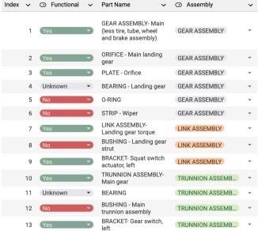
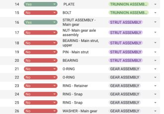
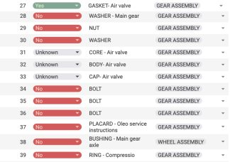
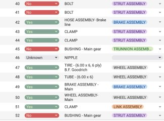

Learning about landing gear
I studied the landing gear of a Piper aircraft using its parts catalog. I learned how to read technical diagrams, understand mechanical assemblies, and got a deeper appreciation for how real-world engineering systems are built.
Functionality table
I then broke up all individual components into assemblies and functionalities, to then proceed to model the parts and assemble them together.
Reflections
This project challenged me to model the Piper Arrow landing gear without any engineering drawings, dimensions, or access to the actual aircraft. I had to really understand the system before I could design it. I learned how to use advanced SolidWorks tools like surfaces and splines, and worked closely with a partner to make sure all 52 parts and 6 assemblies fit together. I also completed a Simulink simulation to better represent how the system works.
Gallery




